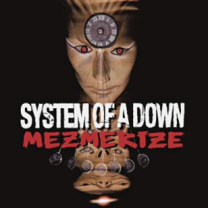

Discografia · 1998 — 2020
System of a Down
1998 · Album
Toxicity
2001 · Album
Steal This Album!
2002 · Album

Mezmerize
2005 · Album
Hypnotize
Protect the Land / Genocidal Humanoidz
2020 · Singolo
404
Il profilo che cerchi non esiste o è stato rimosso.